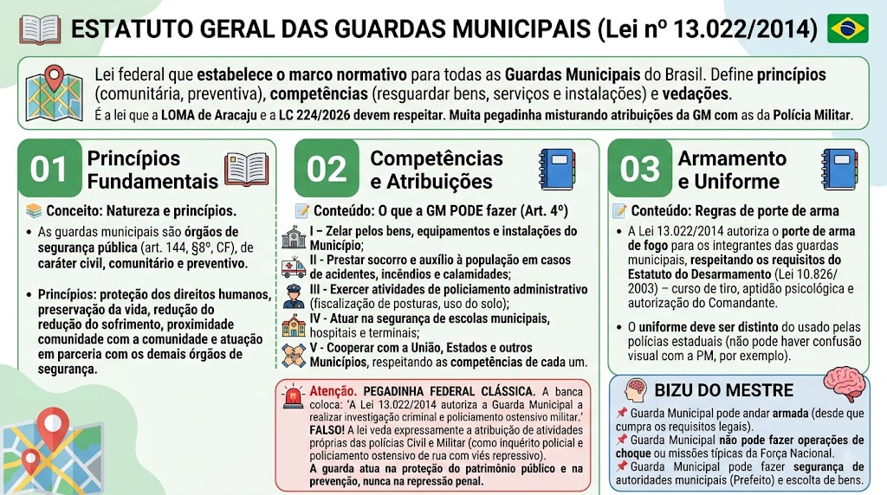

Material de estudo: Estatuto Geral das Guardas Municipais (Lei nº 13.022/2014)
Material complementar · Ver fonte no GitHub
Princípios Fundamentais
Natureza e princípios
As guardas municipais são órgãos de segurança pública (art. 144, §8º, CF), de caráter civil, comunitário e preventivo. Seus princípios são: proteção dos direitos humanos, preservação da vida, redução do sofrimento, proximidade com a comunidade e atuação em parceria com os demais órgãos de segurança.
Competências e Atribuições
O que a GM PODE fazer (Art. 4º)
I - Zelar pelos bens, equipamentos e instalações do Município;
II - Prestar socorro e auxílio à população em casos de acidentes, incêndios e calamidades;
III - Exercer atividades de policiamento administrativo (fiscalização de posturas, uso do solo);
IV - Atuar na segurança de escolas municipais, hospitais e terminais;
V - Cooperar com a União, Estados e outros Municípios, respeitando as competências de cada um.
🚨 PEGADINHA FEDERAL CLÁSSICA
A banca coloca: 'A Lei 13.022/2014 autoriza a Guarda Municipal a realizar investigação criminal e policiamento ostensivo militar.' FALSO! A lei veda expressamente a atribuição de atividades próprias das polícias Civil e Militar (como inquérito policial e policiamento ostensivo de rua com viés repressivo). A guarda atua na proteção do patrimônio público e na prevenção, nunca na repressão penal.
Armamento e Uniforme
Regras de porte de arma
A Lei 13.022/2014 autoriza o porte de arma de fogo para os integrantes das guardas municipais, respeitando os requisitos do Estatuto do Desarmamento (Lei 10.826/2003) – curso de tiro, aptidão psicológica e autorização do Comandante. O uniforme deve ser distinto do usado pelas polícias estaduais (não pode haver confusão visual com a PM, por exemplo).
BIZU DO MESTRE
📌 Guarda Municipal pode andar armada (desde que cumpra os requisitos legais).
📌 Guarda Municipal não pode fazer operações de choque ou missões típicas da Força Nacional.
📌 Guarda Municipal pode fazer segurança de autoridades municipais (Prefeito) e escolta de bens.
Requisitos para Investidura (Art. 10)
Requisitos básicos para ser Guarda Municipal
A Lei 13.022/2014 exige, taxativamente:
- Nacionalidade brasileira;
- Gozo dos direitos políticos;
- Quitação com as obrigações militares e eleitorais;
- Nível médio completo de escolaridade;
- Idade mínima de 18 anos;
- Aptidão física, mental e psicológica;
- Idoneidade moral comprovada por investigação social e certidões judiciais.
⚠️ PEGADINHA: A banca adora inventar exigência de nível superior ou idade máxima. A lei não exige nem um nem outro!
Limites do Efetivo (Art. 7º)
Limites máximos por população
A lei fixa limites máximos para o efetivo da Guarda Municipal, conforme a população do município:
- Até 50.000 habitantes → até 0,4% da população;
- De 50.001 a 500.000 habitantes → até 0,3% da população (mínimo de 200 integrantes);
- Acima de 500.000 habitantes → até 0,2% da população (mínimo de 1.500 integrantes).
📌 Dica: Grave os percentuais decrescentes com o aumento da população – e os mínimos de 200 e 1.500.
Controle Interno e Externo (Art. 13)
Corregedoria e Ouvidoria
Corregedoria (Controle Interno): apura infrações disciplinares da tropa. É obrigatória em municípios com mais de 50.000 habitantes OU em qualquer município que utilize arma de fogo.
Ouvidoria (Controle Externo e Independente): recebe e examina elogios, denúncias, reclamações e sugestões da população.
🚨 SUPER PEGADINHA: Se a Guarda usar arma de fogo, a Corregedoria é obrigatória mesmo que o município tenha menos de 50.000 habitantes! A banca sempre tenta inverter essa regra.
Cargos de Direção e Comando (Arts. 14 e 15)
Provimento e comando
Art. 14: Os cargos em comissão e funções de confiança da Guarda Municipal devem ser providos por membros de carreira do quadro.
Art. 15: O comando da Guarda deve ser exercido por integrante da carreira (a exceção temporária dos 4 primeiros anos da lei já expirou).
⚠️ PEGADINHA: A banca pode dizer que o Prefeito pode nomear um civil para comandar a GM – FALSO! O comando é privativo de membro da carreira.
Prerrogativas e Uniforme (Arts. 18 e 19)
Prisão especial e padronização
Prisão Especial (Art. 18): Em caso de prisão antes da condenação definitiva, o guarda municipal tem direito a recolhimento em cela isolada dos demais presos comuns.
Uniforme (Art. 19): Uso de uniforme preferencialmente na cor azul-marinho, devendo ser nitidamente distinto dos uniformes das Forças Armadas e das polícias estaduais.
📌 Dica: A prisão especial é uma prerrogativa funcional, não é privilégio pessoal – está ligada à função.
Jurisprudência do STF (ADPF 995)
⚖️ ATUALIZAÇÃO JURISPRUDENCIAL
O STF, na ADPF 995, firmou o entendimento de que as Guardas Municipais integram o sistema de segurança pública.
Além disso, STF/STJ reconhecem que guardas municipais podem realizar busca pessoal e prisão em flagrante, desde que:
- Haja fundada suspeita;
- A ação esteja diretamente ligada à tutela dos bens, serviços e instalações municipais ou a crimes em andamento.
⚠️ ATENÇÃO: Isso não significa que a GM vira polícia judiciária – a vedação à investigação criminal permanece. A atuação é pontual, preventiva e vinculada ao patrimônio municipal.
Mapa-mental
Mapa-mental - Estatuto GM
